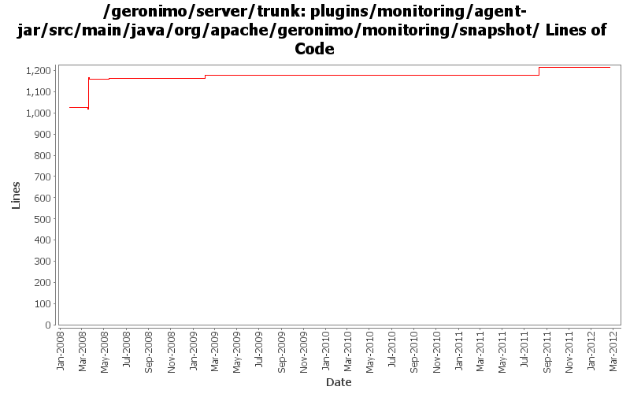

[root]/plugins/monitoring/agent-jar/src/main/java/org/apache/geronimo/monitoring/snapshot

| Author | Changes | Lines of Code | Lines per Change |
|---|---|---|---|
| Totals | 21 (100.0%) | 492 (100.0%) | 23.4 |
| viet | 6 (28.6%) | 370 (75.2%) | 61.6 |
| rwonly | 3 (14.3%) | 77 (15.7%) | 25.6 |
| gawor | 2 (9.5%) | 32 (6.5%) | 16.0 |
| jdillon | 3 (14.3%) | 7 (1.4%) | 2.3 |
| xiaming | 1 (4.8%) | 3 (0.6%) | 3.0 |
| ecraig | 6 (28.6%) | 3 (0.6%) | 0.5 |
GERONIMO-6281 Fix wrong use of geronimo property about GERONIMO_HOME and GERONIMO_SERVER, provided by Russell, for 3.0 trunk
3 lines of code changed in 1 file:
GERONIMO-5712 Geronimo should remember the monitoring server enablement status. ( Thanks Fang Shenghao for the patch!)
77 lines of code changed in 3 files:
added license headers
32 lines of code changed in 2 files:
Fix for Geronimo-4018. Manually determine the classloader that ObjectFactory is in.
4 lines of code changed in 1 file:
More loggers back to static
1 lines of code changed in 1 file:
(GERONIMO-3985) Use SLF4J as the primary logging facade for Geronimo
6 lines of code changed in 2 files:
Fix for geronimo-3774. Moves all hardcoded string and numerical constants to one file.
26 lines of code changed in 2 files:
Fix for Geronimo-3925. Uses JAXB to manipulate XML.
340 lines of code changed in 3 files:
GERONIMO-3719: Monitoring agent uses sun classes
Removed commented out chunks no longer used
Quick fix was put in revision 606631 by david jencks
0 lines of code changed in 1 file:
GERONIMO-3790
monitoring agent should provide jmx support
Patch by Viet Nguyen
Committing this as thus far it is functional, keep jira open until confirmed no problems
3 lines of code changed in 1 file:
Monitoring Plugin-
Recursively converted all windows encoded files to unix encoding.
0 lines of code changed in 4 files: